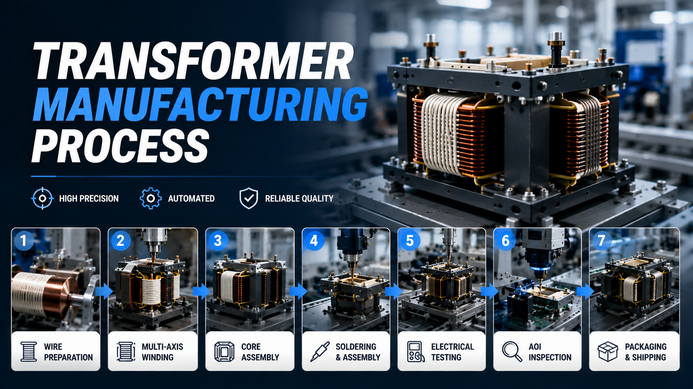

Complete High Frequency Transformer Manufacturing Process Explained

Summary
High frequency transformers are essential components used in electric vehicle chargers, renewable energy systems, industrial power supplies, telecommunications equipment, AI servers, and energy storage solutions. As demand for compact, high-efficiency power electronics continues to grow, manufacturers require reliable production processes capable of delivering consistent quality at scale.
This guide explains the complete high frequency transformer manufacturing process, from raw material preparation and precision winding to assembly, testing, packaging, and smart factory automation. Whether you are planning a new production facility or upgrading an existing transformer factory, understanding the complete manufacturing workflow is the first step toward improving efficiency and long-term competitiveness.
Technology
- High Frequency Transformer Manufacturing
- Transformer Production Process
- Multi-Axis Automatic Winding
- Automatic Material Feeding
- Transformer Core Assembly
- Precision Soldering
- Electrical Performance Testing
- Vision Inspection
- Automatic Packaging
- Smart Factory Automation
- MES Integration
- Industrial Automation
Challenge
Although high frequency transformers are relatively compact components, their manufacturing process requires extremely high precision.
Manufacturers commonly face challenges such as:
Maintaining consistent winding accuracy
Controlling wire tension throughout production
Preventing assembly defects
Ensuring electrical performance consistency
Reducing manual handling errors
Increasing production capacity without sacrificing quality
Meeting increasingly demanding customer delivery schedules
As production volumes grow, relying on manual processes alone often creates bottlenecks that limit productivity and increase manufacturing costs.
Solution
Modern transformer manufacturers are replacing isolated manual operations with fully integrated automated production lines.
Instead of treating winding, assembly, testing, and packaging as independent workstations, advanced factories connect every manufacturing stage into one continuous production system.
By integrating multi-axis winding technology, automated assembly, intelligent inspection, and digital production management, manufacturers can improve efficiency, maintain consistent quality, and create scalable manufacturing capacity for future business growth.
Workflow & Layout
Raw Material Inspection
↓
Automatic Material Feeding
↓
Multi-Axis Precision Winding
↓
Wire Cutting & Lead Processing
↓
Magnetic Core Assembly
↓
Automatic Soldering
↓
Glue Dispensing / Insulation
↓
Electrical Performance Testing
↓
Vision Inspection
↓
Laser Marking (Optional)
↓
Automatic Sorting
↓
Packaging
↓
Finished Goods Warehouse
Every stage is designed to maintain product consistency while minimizing unnecessary material handling and production interruptions.
Results & ROI
- Manufacturers adopting complete automated transformer production workflows typically benefit from:
- Higher production throughput
- Reduced labor dependency
- Improved winding precision
- Better electrical performance consistency
- Lower defect and rework rates
- Shorter production cycles
- Improved traceability through digital production management
- Lower long-term manufacturing costs
- Easier factory expansion as demand grows
- The greatest return on investment comes from optimizing the entire manufacturing process rather than improving individual workstations.
Equipment List
- A complete high frequency transformer production line may include:
- Automatic Material Feeding System
- Multi-Axis Automatic Winding Machine
- Wire Cutting & Processing Equipment
- Transformer Core Assembly Station
- Precision Soldering Equipment
- Glue Dispensing System
- Electrical Testing Equipment
- AOI Vision Inspection System
- Laser Marking System (Optional)
- Automatic Sorting System
- Packaging Equipment
- Conveyor & Material Transfer System
- MES / ERP Integration (Optional)
- Smart Warehouse (Optional)
Project Overview / Opening
High frequency transformers are widely used in modern power electronics because of their compact size, high efficiency, and excellent power conversion performance.
As industries such as electric vehicles, renewable energy, AI computing, industrial automation, and energy storage continue to expand, manufacturers must produce larger volumes while maintaining increasingly strict quality standards.
Modern transformer production has therefore evolved from labor-intensive manufacturing into highly automated production systems that combine precision machinery, intelligent inspection, and digital factory management.
Understanding the complete manufacturing process helps manufacturers identify opportunities to improve productivity, product quality, and operational efficiency.
Key Points
- High frequency transformer production requires multiple precision manufacturing stages.
- Winding is the most critical process affecting product performance.
- Automated assembly improves manufacturing consistency.
- Electrical testing ensures every transformer meets performance requirements.
- Vision inspection reduces quality variation before shipment.
- Digital production management improves traceability.
- Smart factory integration supports continuous production improvement.
- Complete automation delivers greater long-term manufacturing competitiveness.
Implementation / Workflow
The manufacturing process begins with incoming material inspection to ensure wire, magnetic cores, insulation materials, and electronic components meet production specifications.
Materials are automatically supplied to multi-axis winding machines where precise winding patterns are created under controlled wire tension.
After winding, transformers move through wire processing, core assembly, soldering, and insulation processes before undergoing comprehensive electrical testing and visual inspection.
Qualified products are automatically sorted, packaged, and transferred to finished goods storage.
In modern factories, MES platforms collect production data from every workstation, allowing manufacturers to monitor productivity, equipment utilization, quality performance, and maintenance status in real time.
Customer Value / Results
Understanding and optimizing the complete manufacturing process helps transformer manufacturers:
Increase production capacity
Improve product consistency
Reduce labor costs
Lower defect and warranty rates
Improve delivery performance
Simplify production management
Support future product expansion
Meet international customer quality standards
Build more competitive manufacturing operations
Rather than optimizing one process at a time, manufacturers achieve the greatest business value by improving the efficiency of the entire production workflow.
Conclusion / Next Step
The manufacturing process of a high frequency transformer extends far beyond winding alone. Every stage, from material preparation and precision winding to assembly, testing, inspection, and packaging, contributes to product quality, production efficiency, and long-term factory competitiveness. Manufacturers that integrate these processes into a fully automated production system are better positioned to meet growing global demand while reducing operating costs and improving manufacturing consistency.
We help manufacturers worldwide design, source, integrate, and deliver industrial automation projects by leveraging China's manufacturing ecosystem. Whether you are planning a complete transformer production line, upgrading individual manufacturing processes, or building a smart factory, we provide end-to-end support from production planning and equipment sourcing to system integration and project delivery.
Visit our Contact page to discuss your manufacturing project, request a customized production line proposal, or submit your inquiry. Together, we can develop an automation solution tailored to your products, production targets, and future expansion strategy.
SEO Title
Complete High Frequency Transformer Manufacturing Process Explained
SEO Description
High frequency transformers are essential components used in electric vehicle chargers, renewable energy systems, industrial power supplies, telecommunications equipment, AI servers, and energy storage solutions. As demand for compact, high-efficiency power electronics continues to grow, manufacturers require reliable production processes capable of delivering consistent quality at scale.
This guide explains the complete high frequency transformer manufacturing process, from raw material preparation and precision winding to assembly, testing, packaging, and smart factory automation. Whether you are planning a new production facility or upgrading an existing transformer factory, understanding the complete manufacturing workflow is the first step toward improving efficiency and long-term competitiveness.
Related Blog
Start with Your Business Challenge
Tell us about your warehouse, factory, or production requirements. We'll help you explore practical automation solutions and relevant project references.